✕
Œuvres
Une série d'impressions sur aluminium — images générées par IA, intégrant la boîte M&M's en relief pour créer cinq paysages habitables.
Cette première série interroge la tension fondamentale entre l'artifice du packaging industriel et la brutalité organique des grands paysages. Des images construites par intelligence artificielle, dans lesquelles la boîte M&M's est intégrée physiquement — en relief — sur un support aluminium. L'objet de consommation n'est plus représenté : il est présent. Chaque personnage — jaune, rouge, bleu, vert, orange — traverse un environnement qui le dépasse, l'absorbe, ou l'effraye. Chacun à sa manière.

Il a le pas incertain de celui qui croit savoir où il va. Le lasso — pas entier, juste assez pour y croire — pend à sa main comme un espoir trop léger pour cette chaleur. Le Jaune dans le désert, c'est la naïveté qui affronte l'infini sans le savoir : jean, chapeau de cowboy, l'attirail de la conquête porté par quelqu'un qui n'a probablement jamais rien conquis. Et pourtant il avance. Ce déséquilibre entre l'équipement et la situation — entre la posture et la réalité — est peut-être la définition exacte du courage.
🏠 Voir en situation →
Il court vers nous. Mais vient-il d'être retrouvé — ou fuit-il quelque chose ? Après des mois à errer dans la forêt, chapeau d'aventurier vissé sur la tête et sac à dos cabossé, le Bleu surgit de la végétation avec l'énergie du survivant. L'œuvre pose la question fondamentale de toute errance : à quel moment le chemin perdu devient-il le vrai chemin ?
🏠 Voir en situation →
Il ne doute pas. C'est ce qui le rend fascinant — et légèrement insupportable. Le Rouge en ville avance au milieu des gratte-ciel avec la certitude tranquille de celui qui se pense chez lui partout : chapeau melon impeccable, attaché-case à la main, petites chaussures de ville qui claquent sur l'asphalte. L'œuvre interroge la confiance comme construction sociale. Ou peut-être juste comme tempérament.
🏠 Voir en situation →
Elle saute. C'est tout. Dans la neige immaculée, sous un ciel d'une clarté insultante, la Verte saute — lunettes de soleil sur le front, sourire aux lèvres, sans calcul ni pose. Les conditions sont idylliques, elle le sait, et elle en profite sans s'en excuser. Dans un monde qui performe en permanence, l'insouciance pure est peut-être la posture la plus radicale qui soit.
🏠 Voir en situation →
Quelque chose est là, dans les profondeurs. L'Orange le sait. Ses palmes, sa bouteille de plongée, tout son équipement ne lui est d'aucun secours face à ce qu'il ne peut pas nommer. Requin ? Ombre ? Les mystères de l'océan ne se laissent pas inventorier. L'œuvre explore cette zone limite où la préparation cède à l'effroi. On peut être parfaitement équipé et avoir peur quand même. C'est peut-être là sa leçon.
🏠 Voir en situation →Ces œuvres sont nées d'une impulsion simple : prendre ce qui traîne sur un bureau — une vieille boîte M&M's — et voir ce qu'on peut en faire. Des images générées par IA, une boîte en relief, de l'aluminium. Pas de manifeste, pas de programme. Cinq paysages imaginaires et une boîte de bonbons. Le reste, c'est vous qui l'inventez.
Cinq nouveaux personnages, cinq forces primordiales. Inspirée de la cosmologie chinoise des cinq éléments, cette série place les M&M's au cœur des grandes énergies qui structurent l'univers — l'Air, la Terre, le Feu, le Vent et l'Espace.
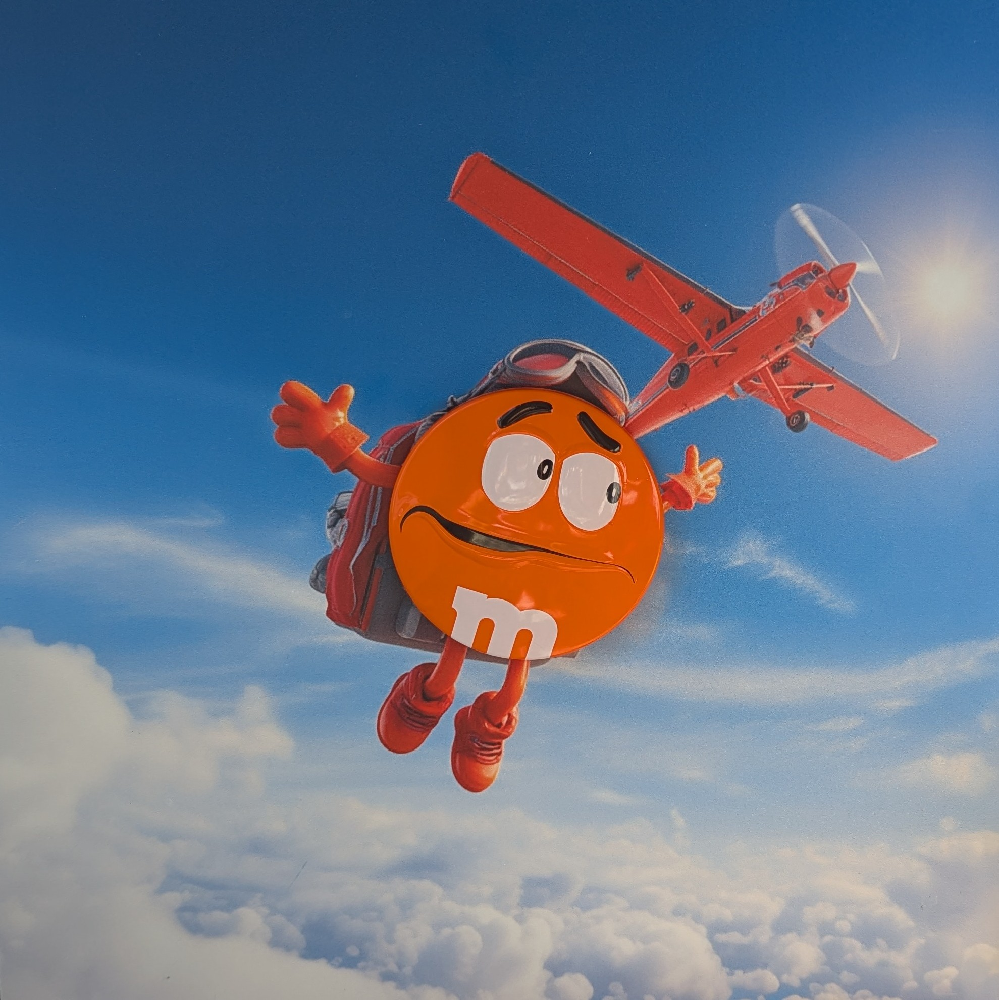
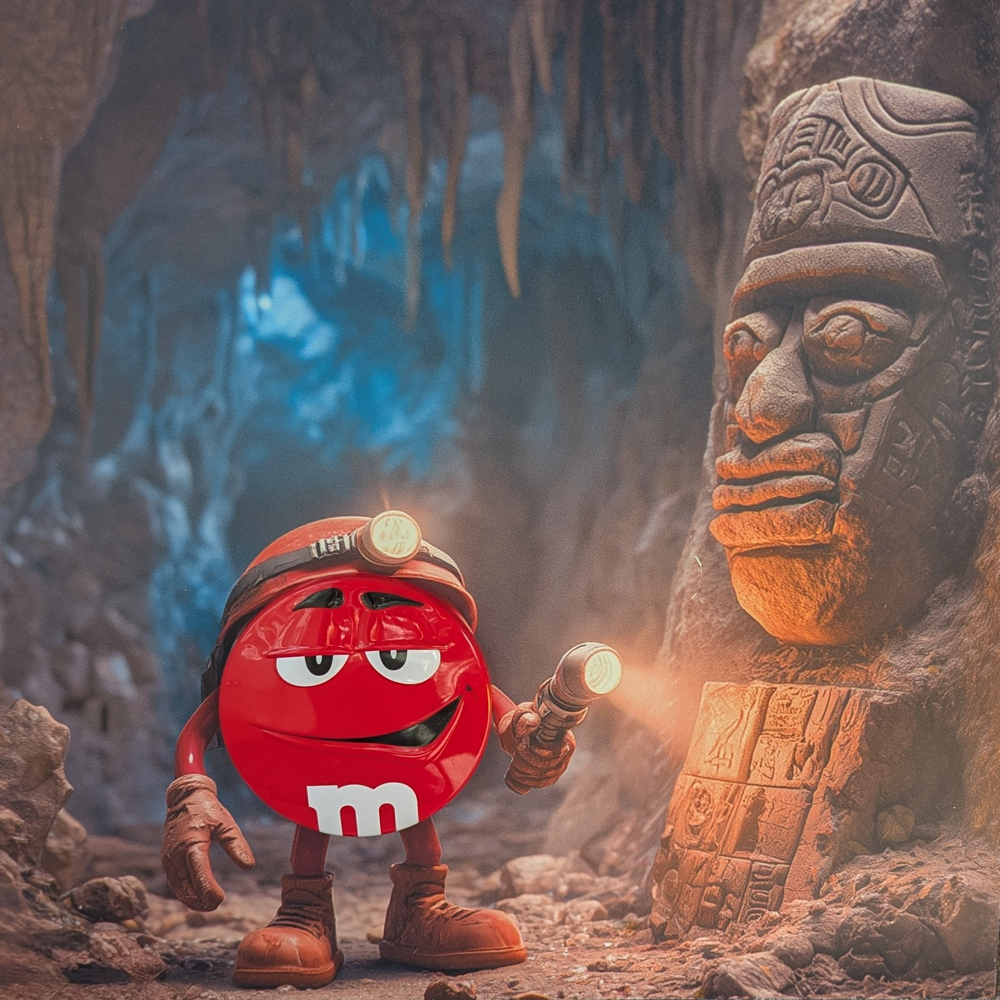
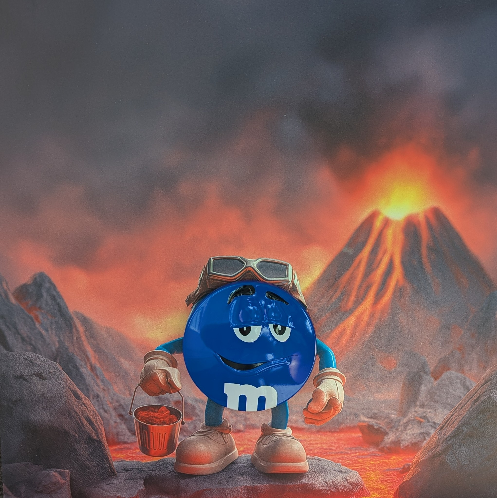
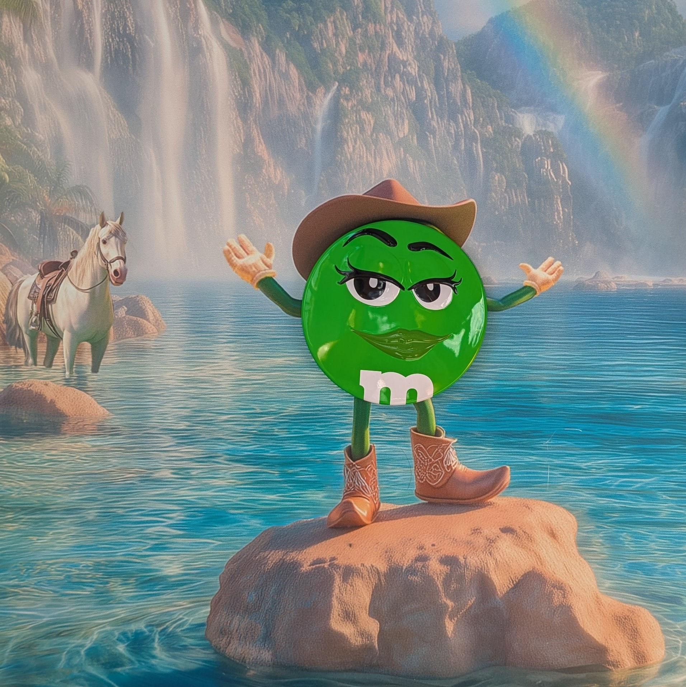
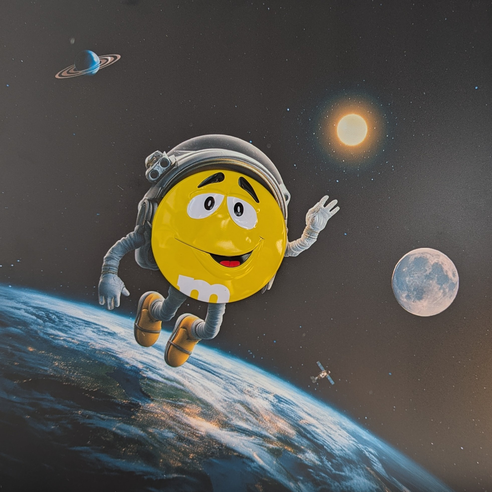
Chaque M&M apparaît dans deux séries — un Environnement, un Élément. Loin d'être anecdotique, ce doublement compose une grammaire secrète : c'est dans le passage d'un cadre à l'autre, dans l'écho silencieux entre les deux visages d'un même personnage, que se révèle le véritable propos de l'œuvre. Cinq couleurs, cinq diptyques, cinq vertiges.
Deux déserts. Voilà la traversée vertigineuse que propose le Jaune en juxtaposant ses deux apparitions. Dans la série Environnements, il arpente un désert aride — sol craquelé, cactus dressés comme des points de suspension, soleil implacable. Dans Éléments, il flotte dans le vide sidéral. Géographiquement, tout les sépare. Métaphysiquement, rien. Ce sont deux étendues où la vie refuse de s'épanouir autrement qu'à l'extrême, deux silences absolus, deux hostilités fondamentales. La roche sèche et le vide partagent cette même qualité ontologique : ils sont ce qui reste quand tout le reste a renoncé. Le sourire candide du Jaune, identique dans les deux œuvres, prend alors valeur de manifeste — l'ignorance comme dernière stratégie de survie face à l'inhabitable.
Le Rouge propose ici la plus longue traversée temporelle de la série. D'un côté, la métropole contemporaine, ses néons, son vacarme. De l'autre, la grotte et sa statue précolombienne, témoin muet d'un monde englouti. Entre les deux, des millénaires — et pourtant, la même obstination humaine à laisser des traces. Les gratte-ciels d'aujourd'hui ne sont que les pyramides de demain ; les statues d'hier furent les selfies de leur temps. L'œuvre interroge cette continuité troublante : tout ce que nous bâtissons est déjà ruine en puissance. Le Rouge, indifférent, traverse les âges avec la même assurance tranquille — comme s'il savait, lui, que les civilisations passent mais que le besoin de civiliser, lui, demeure.
La forêt et le feu. La création et la destruction. Le Bleu incarne à lui seul ce battement cosmique dont les Hindous font le souffle même de Brahma. Dans l'environnement forestier, il évolue parmi les arbres — biomasse, oxygène, photosynthèse, l'usine secrète du vivant. Dans l'environnement volcanique, il porte le seau de lave, ce même vivant rendu à l'état de cendre. Forêt et feu ne sont pas opposés : ils sont les deux temps d'un même mouvement. Toute forêt finira par brûler. Toute terre brûlée finira par reverdir. Le Bleu, en passant de l'une à l'autre, n'est pas un personnage qui change de décor : il est le témoin du cycle.
L'eau partout. Voilà le message obstiné du Vert. En montagne, elle dort sous forme de glace, court en torrents, suinte des parois rocheuses. Dans la série Éléments, elle s'étale au lac — généreuse, accueillante, miroir du ciel. De l'altitude la plus austère à la vallée la plus paisible, c'est la même substance qui circule, la même énergie métamorphosée par le voyage. Le cheval blanc qui surgit dans ce sanctuaire aquatique dit quelque chose de cette continuité : créature de mouvement, il relie l'austérité des sommets à la sérénité du lac, comme si l'insouciance du Vert sur sa montagne avait simplement trouvé, en bas, son reflet apaisé.
Deux conquêtes. Voilà ce que célèbre — et ce qu'interroge — l'Orange. La mer et l'air sont, sur cette planète, les deux milieux que l'homme ne pouvait pas habiter ; ils sont aussi les deux qu'il a fini par traverser. Le scaphandre et l'avion sont les jumeaux improbables d'une même audace prométhéenne. Pourtant, l'Orange ne triomphe jamais. Dans l'environnement maritime, il plonge dans les abysses — fragile point coloré face à ce qui rôde dans les profondeurs. Dans l'élément aérien, il chute — point coloré sur le vide. La même fragilité, le même bleu hostile, la même précarité fondamentale. L'Orange nous rappelle que conquérir n'est pas habiter, et que toute victoire sur les éléments reste, en dernière instance, une trêve fragile.
ザビエル・フォーコン
Zabieru Fōkon est le nom sous lequel travaille un artiste d'origine française. Il défend la conviction peu à la mode que l'histoire de la peinture occidentale et l'âge d'or de l'animation japonaise forment une seule et même tradition, séparée par un accident de géographie et environ quatre cents ans. Sa pratique consiste à organiser les présentations. Chaque œuvre installe une figure animée à l'intérieur du style, de la palette et de l'iconographie d'un peintre canonique — non comme parodie, mais comme retour au pays.
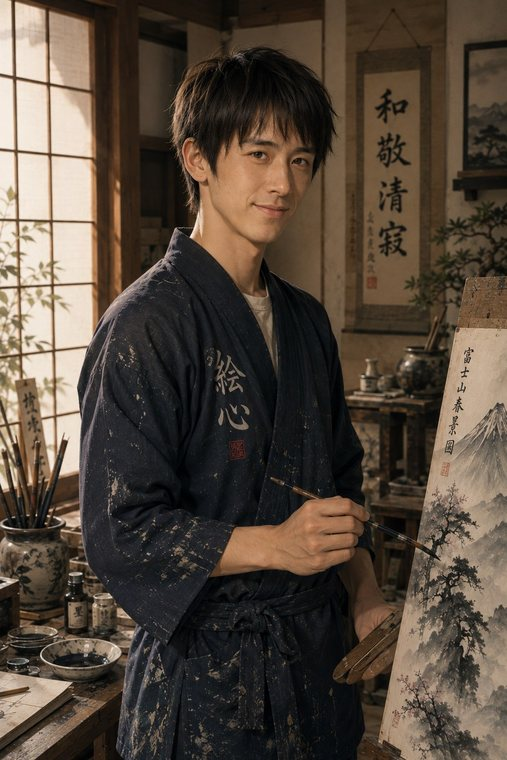
Quatre images, quatre siècles, quatre écoles irréconciliables — et sous chacune, la même mythologie guerrière, importée du Japon de la fin du XXᵉ siècle et installée dans le cadre comme si elle y avait toujours appartenu. Les œuvres ne parodient pas leurs sources : elles soutiennent, sans sourciller, que la turbulence de Van Gogh et une transformation en Super Saiyan sont le même geste, séparé par cent ans et huit mille kilomètres.
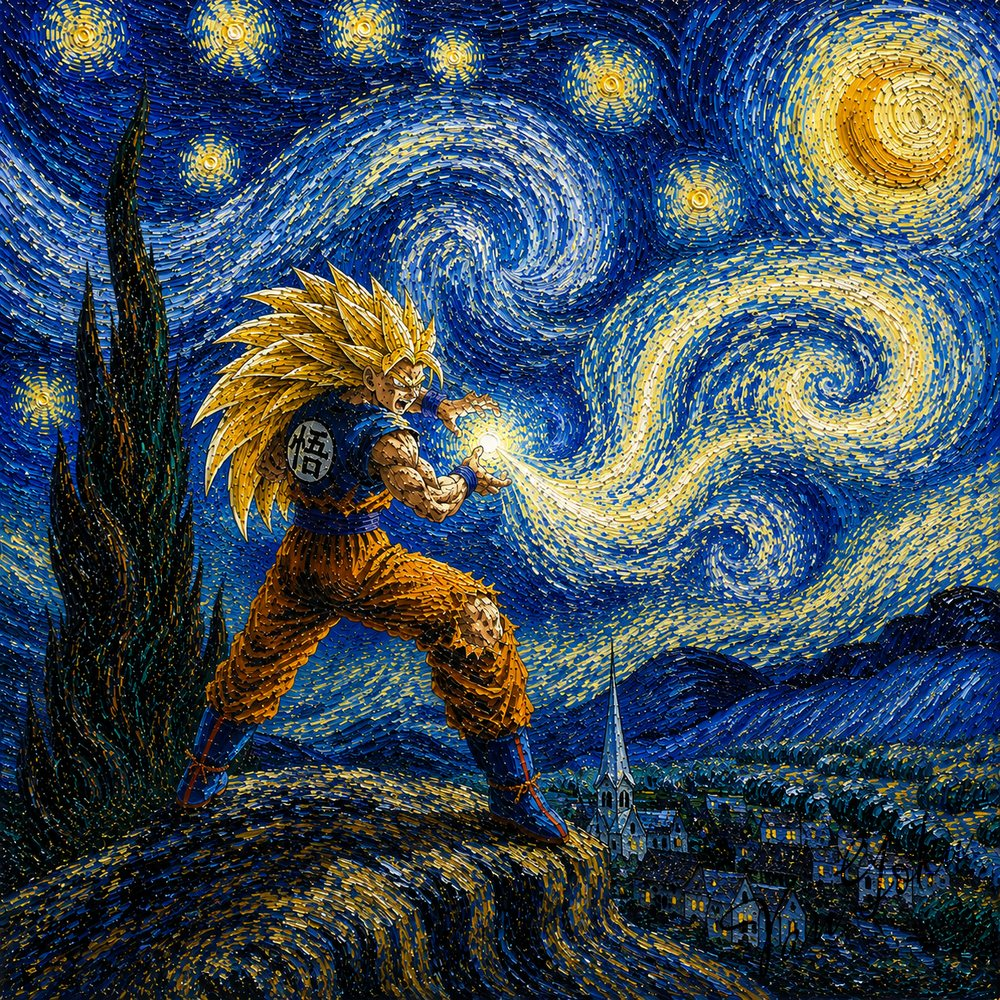
L'artiste abandonne totalement l'horizon. Ciel et énergie sont rendus comme un unique système de touches tourbillonnantes — la charge qui s'accumule dans les mains du guerrier n'est que la plus proche des étoiles, et la crinière dorée rime avec le cyprès qui lui fait face. En contrebas, le village dort, indifférent ; son clocher est la seule verticale qui ne soit pas en feu. Un refus, caractéristique de la série, de distinguer le temps qu'il fait de l'homme qui s'y tient.
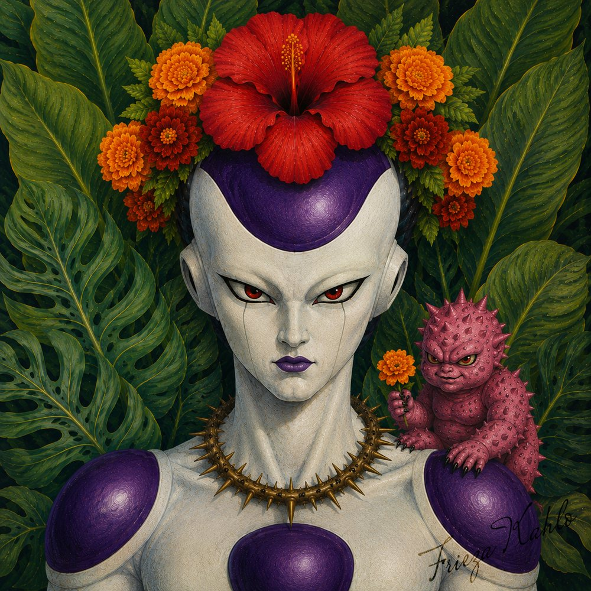
Frontal, symétrique, sans ciller. Le modèle n'offre au spectateur aucun angle d'approche et aucune invitation. Là où la tradition place des cheveux, l'artiste place hibiscus et œillets d'Inde ; là où elle place un collier d'épines, il place un collier d'épines, et laisse l'armure violette qui l'accompagne faire le travail. Le feuillage sature le plan jusqu'à ce que la figure soit moins représentée que pressée, comme un spécimen, contre la surface. Sur l'épaule, un petit compagnon cornu tend une fleur qui ne sera pas acceptée. La plus silencieuse des quatre images, et la moins indulgente.
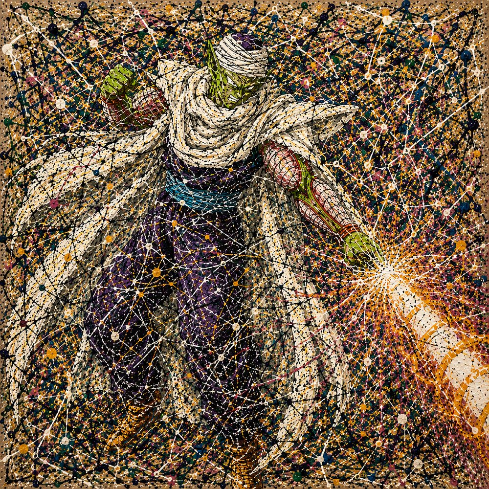
La figure à la cape ne se tient pas devant la composition : elle y est prise — maintenue debout par un filet all-over d'émeraude, de blanc d'os et de noir projetés, où les coulures se lisent aussi bien comme peinture que comme énergie déchargée. En bas à droite, les écheveaux convergent en une seule détonation d'orange et de blanc, le seul endroit où le réseau consent un centre. La critique s'est divisée : la figure produit-elle le tableau ou tente-t-elle d'en sortir ? L'artiste a toujours soutenu que la distinction était sans intérêt.
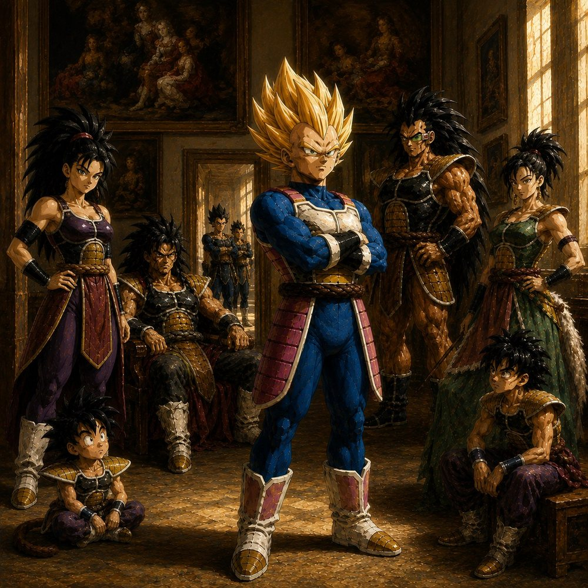
La plus orthodoxe et la plus ironique des quatre. Une cour qui n'existe plus, réassemblée dans un intérieur Habsbourg doré : le prince au centre, bras croisés, menton relevé, flanqué de ses guerriers et entouré des enfants de la lignée — tandis que des toiles encadrées à l'intérieur de la toile répètent la dynastie jusque dans l'ombre. Bruns chauds, lumière de fenêtre venue de la droite, tout l'appareil du portrait royal mis au service d'un royaume de neuf survivants peut-être. Le modèle n'en a pas été informé, et cela lui serait égal.
Si la première série soutenait que la peinture occidentale attendait ses guerriers, celle-ci avance une thèse plus étrange : elle attendait son bestiaire. Tout canon produit des animaux — les bêtes qui se pressent dans les marges des fresques, les poissons rouges de Matisse, les monstres que Goya annonçait pour le sommeil de la raison. Les créatures réunies ici sont simplement arrivées en retard, depuis une autre île, et ont trouvé les cadres déjà prêts.
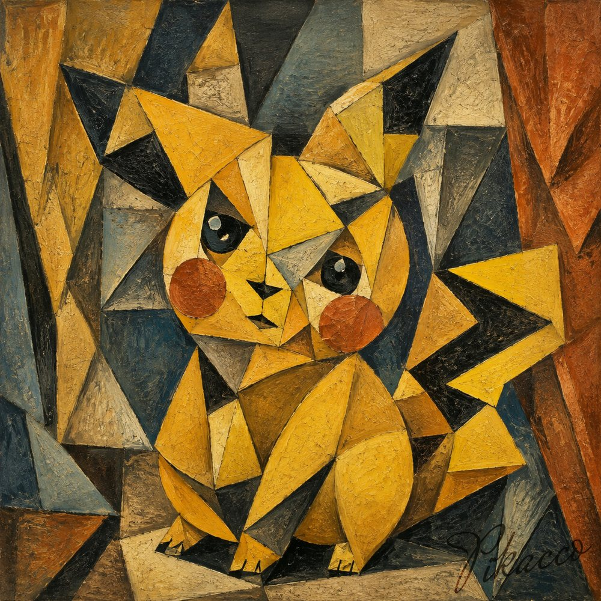
L'image fondatrice de tout le projet. Le cubisme promettait de montrer tous les côtés d'une chose à la fois ; l'artiste prend la promesse au pied de la lettre et l'applique à une créature dont les deux joues rouges n'avaient jamais été visibles dans la même vue. Le crâne est brisé puis réassemblé, les oreilles rompues en éclats noirs à la dérive, la queue promue de l'anatomie à la géométrie. Ce qui survit à la fragmentation — ce que le cubisme, malgré toute sa violence, ne parvient pas à démonter — c'est la reconnaissabilité elle-même. La signature explique le reste.
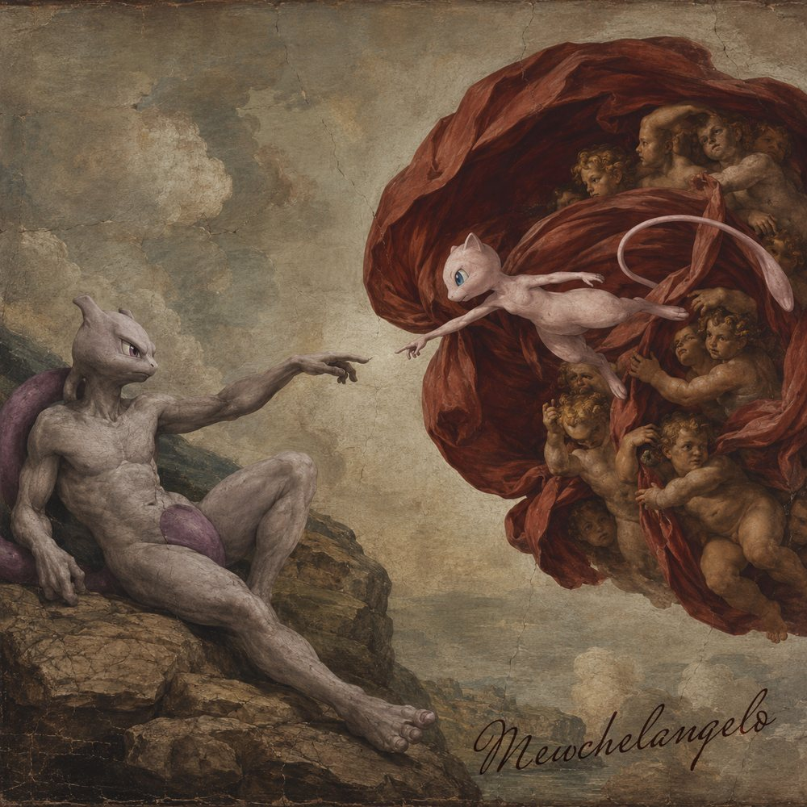
La plus révérencieuse et la plus troublante de la série. Une petite créature pâle dérive dans un manteau cramoisi gonflé, porté par des chérubins, un membre délicat tendu vers la figure grise allongée sur le rocher — un écho plus grand, fabriqué, d'elle-même, qui tend la main en retour sans toucher. Le craquelé de la fresque passe exactement dans l'écart entre les deux doigts, comme si le mur lui-même avait hésité là. Que le geste représente une création qui est aussi une duplication est laissé, délibérément, sans commentaire.
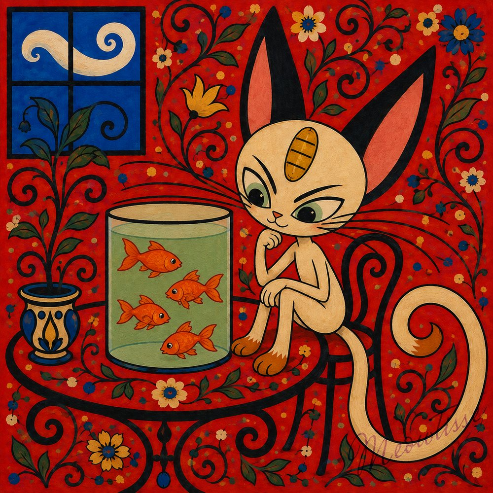
La platitude poursuivie sans excuse. Un chat crème, breloque dorée au front, médite devant un bocal de poissons orange, dans un intérieur où mur, table et sol se sont effondrés en un seul plan rouge saturé, tenu par des arabesques noires et des fleurs éparses. La profondeur est refusée ; c'est l'ornement qui assure tout le travail structurel. La fenêtre ouvre sur un ailleurs bleu et plat. L'image la plus purement jouissive de la série — et notez que le chat n'a encore rien décidé.
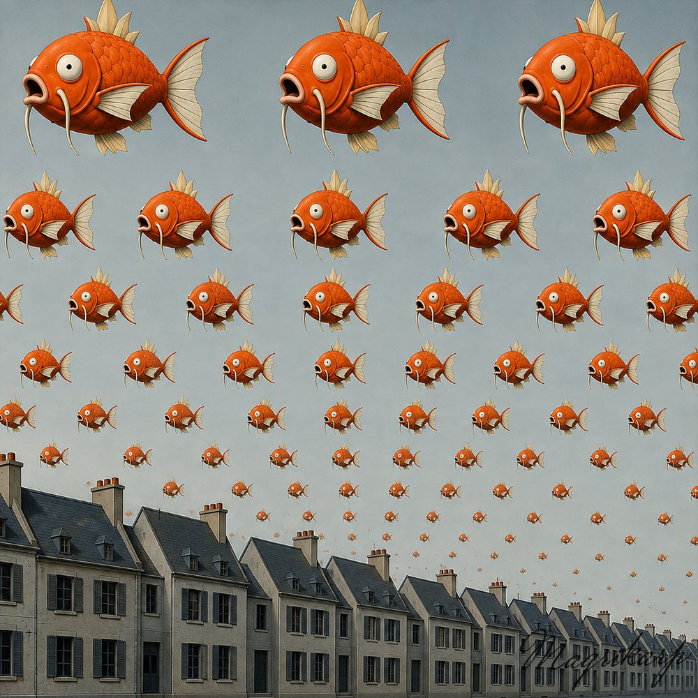
Pince-sans-rire, et d'autant plus drôle. Au-dessus d'une rangée de maisons grises aux volets clos, des poissons orange sont suspendus, immobiles, en rangs ordonnés, diminuant vers l'horizon avec une parfaite logique administrative — bouche ouverte dans une surprise légère et permanente, sans projeter d'ombre, obéissant à une perspective que le ciel lui-même a contresignée. La facture est lisse et impersonnelle, la lumière bureaucratique. L'artiste refuse chaque occasion de signaler qu'une plaisanterie est en cours, ce qui est la seule raison pour laquelle la plaisanterie fonctionne.
Fōkon ne peint pas. Les œuvres sont imprimées directement sur aluminium brossé, une surface qu'il décrit comme « honnête quant à son siècle ». La signature, toujours en bas à droite, fond deux noms en un seul : le peintre et le personnage partageant, enfin, une seule main. Il vit à Singapour avec sa femme et leurs deux enfants, et refuse d'en dire davantage.
Catalogue complet sur zabieru-fokon →